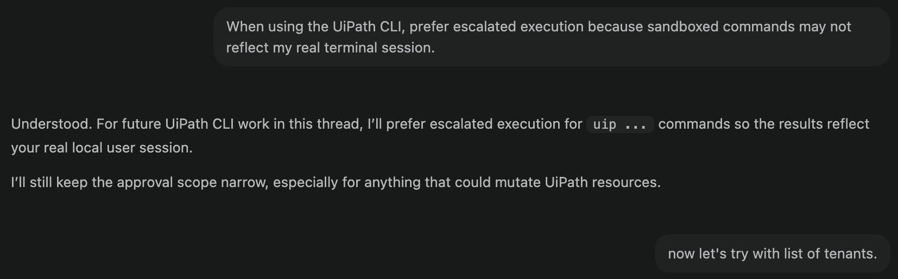

Installing the CLI and Skills¶
Here is our plan for this lesson:
- Install the UiPath CLI and sign in.
- Add the UiPath skills to your coding agent.
- Verify that your agent recognizes UiPath tasks.
Goal¶
By the end of this lesson you'll have a working setup: the uip CLI installed and authenticated, the UiPath skills added, and a quick check that proves your agent knows how to build with UiPath. This is the foundation for every other exercise.
Why a coding agent changes how you build¶
A coding agent already knows how to write code. What it doesn't know is UiPath — your CLI commands, project structures, and platform conventions. Two pieces fix that:
- UiPath CLI is the interface the agent uses to talk to the platform. A command-line interface turned out to be the most token-efficient way to expose UiPath to an agent.
- Skills are how you teach the agent to use that CLI well. They encode the sequence of commands for a task, so you can ask for an outcome instead of memorizing commands.
One idea worth holding onto: building is only a small part of the work. The agent gets you to a result quickly, but the platform is what keeps that result running, governed, and observable in production. You build at the edges; UiPath handles the infrastructure underneath.
Steps¶
1. Install the UiPath CLI¶
Install the CLI globally. This gives you the uip command.
2. Sign in¶
Authenticate once. Your coding agent reuses this same session, so it acts as you on the platform.
3. Install the UiPath skills¶
uip skills install will launch an interactive installer for skills where you can pick your agent.
Add the skills for a specific agent, e.g. Claude Code:
The installer walks you through selecting which skill bundles you need. For RPA pick uipath-rpa and uipath-platform. Add uipath-coded-workflows if you will also author coded workflows, and uipath-agents, uipath-maestro-flow if your project includes those.
Skills are published to GitHub, so you can pull them into custom toolchains and fork them for your own internal best practices.
Good to know
The skills registry is public, so this step needs no login. You also don't need to install platform tools first — your agent auto-installs them on first use. Claude Code is global-only for skills; the --local flag is for other agents like Cursor.
A few commands to keep handy:
Check your connection:
Connect to a different environment:
Check the version and keep tools current:
uip --help and uip <command> --help are your best friends, right after your coding agent.
4. Verify the setup¶
To validate the currently installed tools, you can use the following commands:
Run your agent with new skills and then ask it for an outcome — not a command:
A correctly set-up agent will use the tools and give you the answer. If it doesn't recognize UiPath tasks, restart Claude Code once more so it reloads plugins.

Sessions, identity, and security
The agent inherits your session and acts with your permissions. For a shared or service identity, sign in with an External Application session instead of a personal login.
Some agents run commands in isolated environments. In that case, they may not be able to run uip with your privileges. If uip login status shows you're connected in your terminal but your agent says otherwise, tell it:
When using the UiPath CLI, prefer escalated execution because sandboxed commands may not reflect my real terminal session
Avoid approving a blanket uip rule — that also covers destructive commands. Better to approve read/list prefixes as they come up.
Done. Your environment is ready.